Не сборник советов,
а другая линза
Экология как способ видеть связи — и жить устойчиво: так, чтобы дом, еда, сообщество и экономика служили людям и планете не год и не два, а поколениями.
Смотреть разделы →Все разделы
От философии и психологии до строительства, экономики и науки.
Свежее из лаборатории
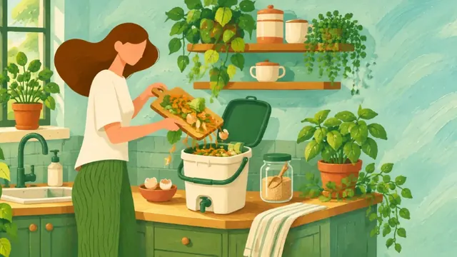
Черви, бокаши или морозилка: как превратить кухонные очистки в землю без запаха и дачи.
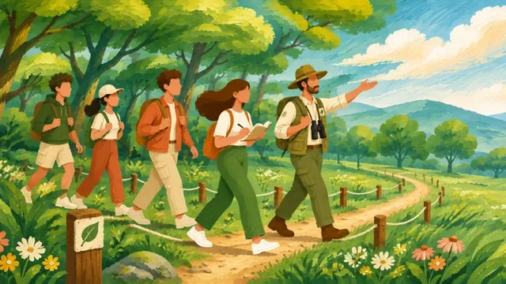
Уроки на улице для любого предмета, юннаты и школьные лесничества — и что это даёт детям.
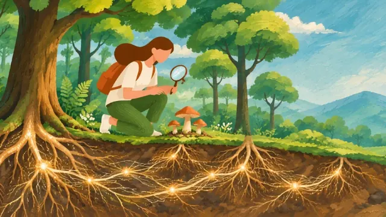
Грибница под каждым лесом: что о «лесном интернете» правда, а что красивая легенда.
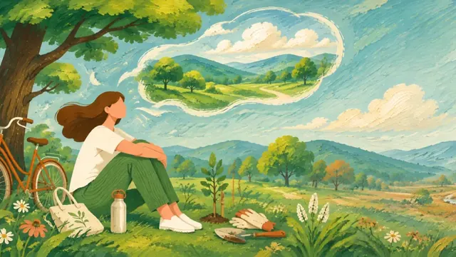
Жёлудь, пластиковая бутылка и два-три года терпения. Как вырастить дерево из семени или черенка — дома, в теплице или вместе со школой.
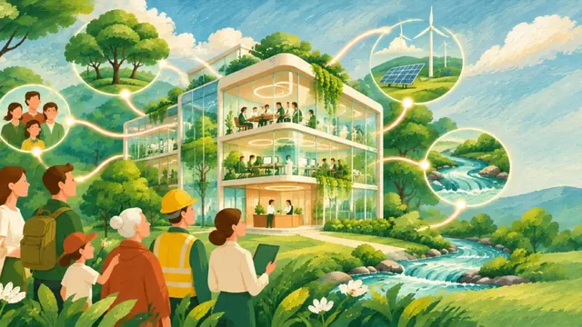
Все 17 Целей устойчивого развития с ключевыми цифрами, почему мир отстаёт к 2030 году и как отличить дела компаний от красивой отчётности.

Мы умнеем быстрее, чем взрослеем. Почему устойчивость требует не только технологий, но и более широкого круга заботы.
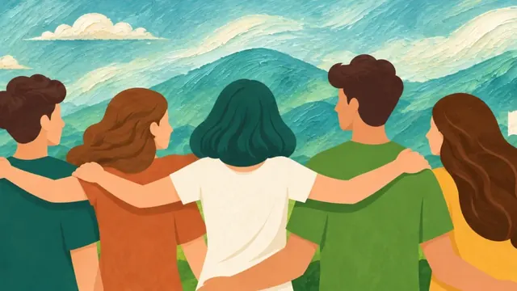
Одиночество, доверие и сообщества по ценностям. Почему устойчивому будущему нужна сеть укоренённых мест, а не острова для богатых.

Откуда у дуба двадцать тонн массы? Почти всё дерево — это бывший углекислый газ. Фотосинтез, уголь как древний лес и роль деревьев в климате.
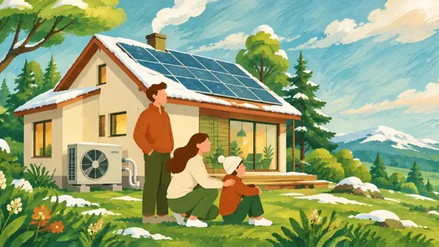
Почему панели подешевели в разы, а атомные блоки дорожают. Обучается не мощность, а штука — и у технологии, существующей в десятках экземпляров, серии нет, значит удешевления ждать не от чего.
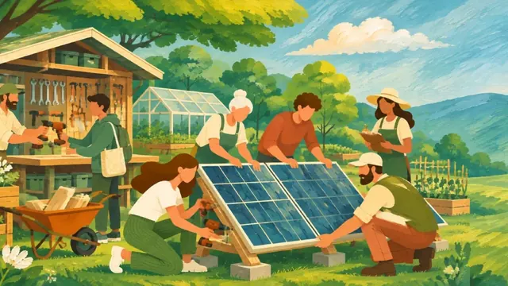
Текст, потерявшийся между июльской версией сайта и репозиторием и найденный в старом архиве. Почему индивидуальная ответственность оказалась удобной идеей.
Материалов слишком много, чтобы листать список. Несколько маршрутов по пять-семь текстов, и между ними сказано, почему дальше читать именно это. Включая тропу «Если вы не согласны».
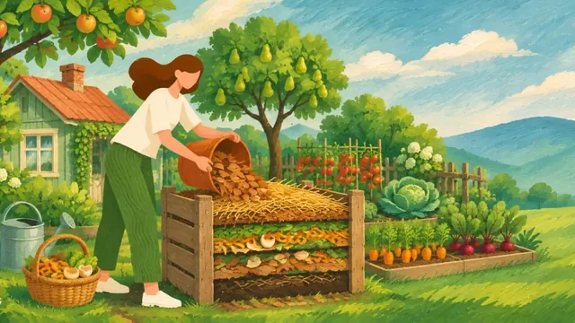
Куча — это не химия, а население. Едва ли не самая конвивиальная технология из существующих — и неприятная арифметика: рычаг не в вашем ведре, а в раздельном сборе органики.
Поиск по всем материалам работает в браузере. Заведён журнал собственных ошибок и записан редакционный метод — включая признание его слабого места.
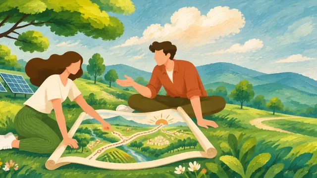
Дегроус против экомодернизма — но в комнате, где сидит человек с планом на двадцать лет. Из трёх решений сошлись по двум за четыре минуты.
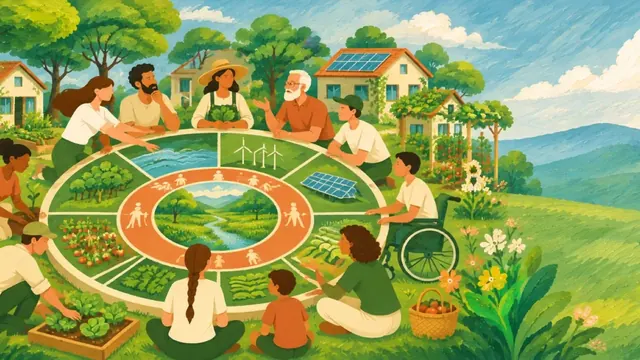
Мортон против Раворт. Она признаёт, что рисует девять границ одинаково твёрдыми, зная, что они не одинаковы. Его спрашивают, что писать во второй строке.
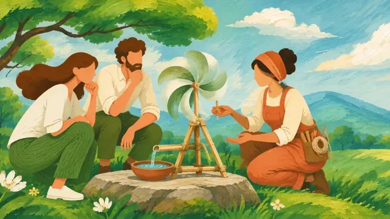
«В этой строчке содержится слово „лицензия“». Спор упирается не в материал и не в патент, а в стоимость доказательства: полтора миллиона и два года.
Двадцать с лишним мыслителей в хронологическом порядке: кто, когда, что сформулировал — и одно возражение каждому. Мыслитель без возражений превращается в икону, а икона не помогает думать.

Инструмент расширяет вашу способность действовать — или требует, чтобы вы его обслуживали. Иллич, 1973. И порог, который он так и не определил.
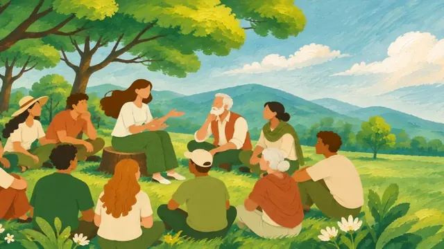
Хардин описал не общее, а бесхозное. Восемь условий Остром — и три возражения, включая то, что изучались только выжившие системы.

Сущность, которая целиком не является нигде. И возражение Мальма: плоская онтология уравнивает нефтяную компанию и ледник.

Норма едет вместе с наблюдателем. Фотографии с одной пристани за полвека: рыба мельчает, выражение лиц не меняется.

Люди остались, поток вещества остановили. Что из этого следует — и почему почва оказывается узким местом, а не выбросы.

Дюны, засыпавшие десяток селений, и полтора столетия ручного закрепления песка. Восстановление работает — и не заканчивается никогда.
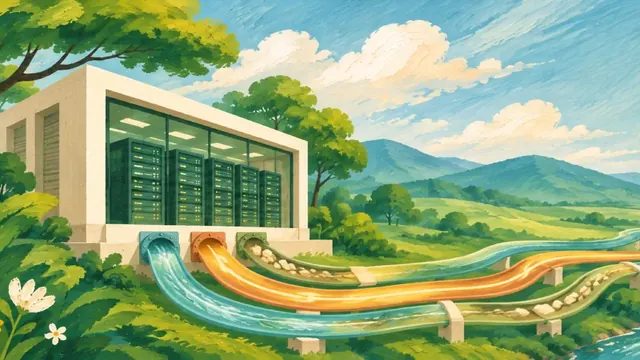
Вещь, чья невидимость не случайна, а является продуктом. Сверхчистая вода, неон для литографии и пятая часть электропотребления целой страны.
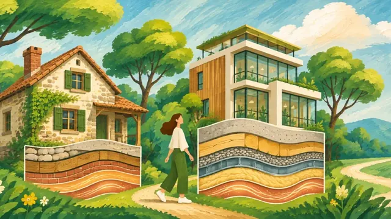
Чем эффективнее здание, тем важнее его постройка. Почему «снесём и построим лучше» может быть верным к 2080 году и неверным для ближайших тридцати лет.

Почему счёт по километрам вводит в заблуждение и как один ген связал ровную окраску с потерей вкуса.

Сначала требование малых островных государств, потом обязательство, и только потом научный доклад. Порядок был обратный привычному.

Организация, породившая это число, от него отказалась — а оно продолжает жить, потому что запоминается.

Худший способ хранить электричество — дороже розетки в тысячи раз. И школьный миф, переживший ртуть на тридцать лет.
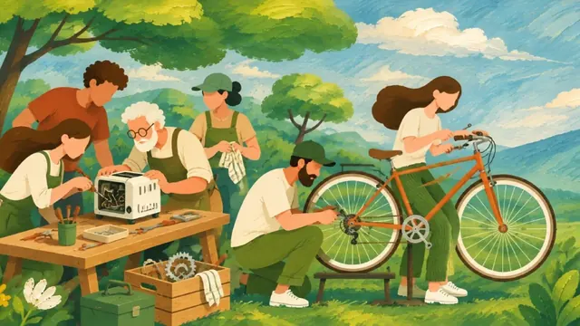
Картель «Фебус», спаривание деталей, дистанционно заблокированные тракторы. И почему «чинить, а не выбрасывать» — хороший лозунг и плохое правило.

Четыре условия, при которых удалась торговля выбросами серы, — и почему ни одно из них не выполняется для углерода.
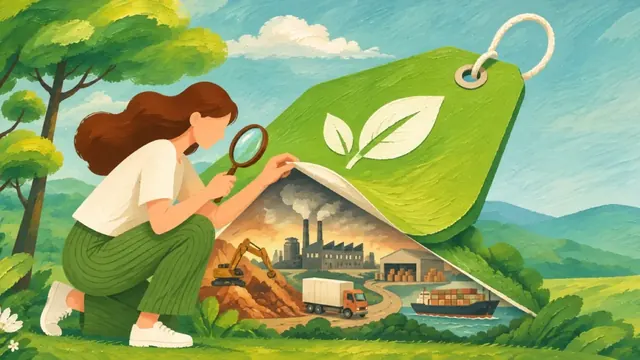
Шесть рабочих приёмов и экономика асимметричной информации. Почему потребительская бдительность здесь не работает — и почему цинизм тоже способ провалиться.
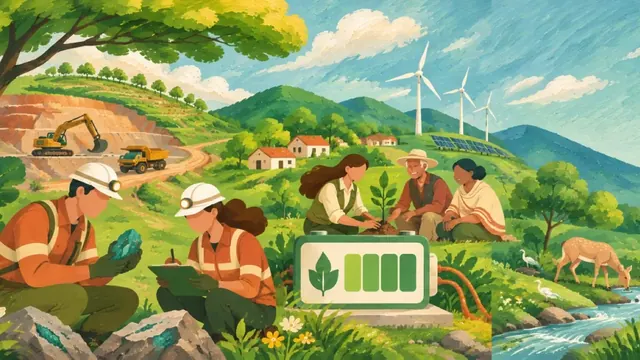
Два утверждения, которые оба верны: переход радикально лучше ископаемой энергетики, и вред от добычи реален, локализован и никем не компенсируется.
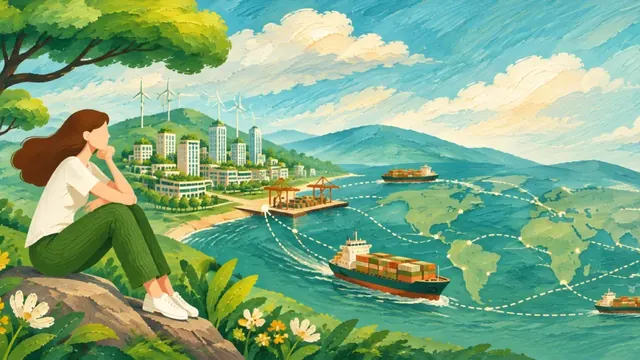
Меморандум Саммерса, две колонки учёта выбросов и «Национальный меч», после которого выяснилось, чем на самом деле был раздельный сбор.
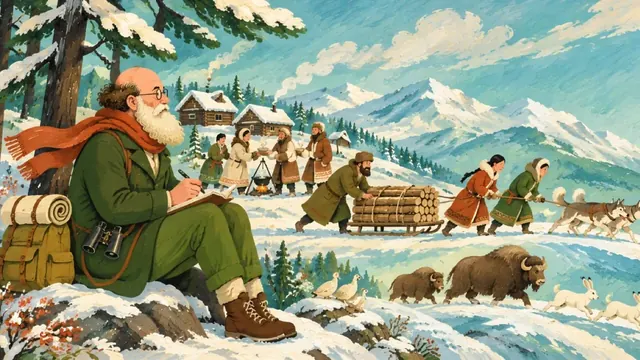
Он уехал проверять Дарвина и вернулся с результатом, которого не ожидал. Почему география наблюдателя определила теорию — и в чём Кропоткин ошибся так же, как социальные дарвинисты.

Первая половина его тезиса оказалась абсолютно точной, и точность её страшна. Вторая — о том, что разум ведёт к разумному результату, — не подтвердилась.
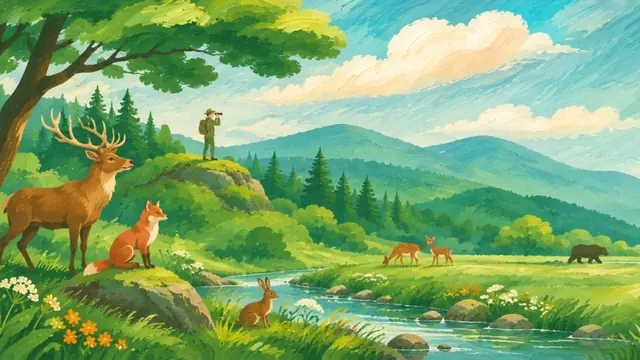
Кожевников, 1908 год: территория, изъятая не для людей, а от людей. Единственный природоохранный институт, который не предъявляет счёта — и потому дважды разгромленный.

Плановая катастрофа и случайный заповедник. Усыхание Арала не было ошибкой в расчётах — ошибкой была рамка расчёта.

Постоянная рубрика: прогнозы и утверждения экологического движения, не выдержавшие проверки. Разбирается только своя сторона — Эрлих, «Пределы роста», антиядерные кампании, органическое земледелие.

Иван Иллич встречает молодого разработчика социальной сети. Разговор о конвивиальных инструментах, радикальной монополии и о том, как цифровая инфраструктура становится незаменимой.
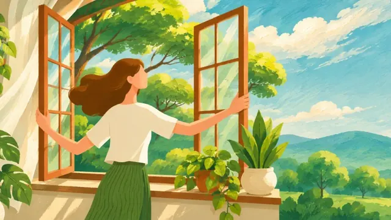
Десять минут, которые меняют весь день. От Нобелевской хронобиологии до конкретного протокола.
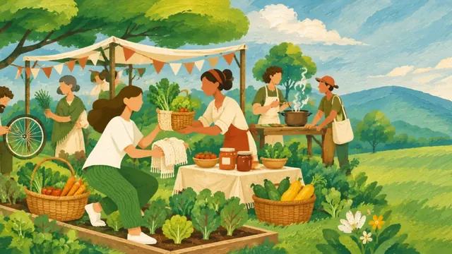
Эксперимент Марка Бойла. Что становится видно, когда деньги перестают быть невидимыми.
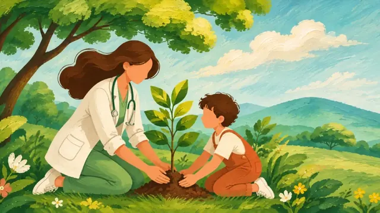
One Health, экспозом, микробиом, планетарные границы. Программное эссе о медицинском факте: чтобы быть здоровым, нельзя жить так, чтобы планета болела.
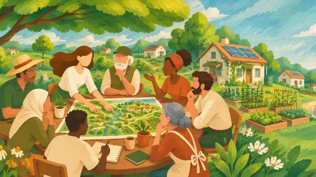
Восемь принципов Элинор Остром, commons, экодеревни и городские микро-сообщества. Третья форма организации, которой не было в учебниках экономики.
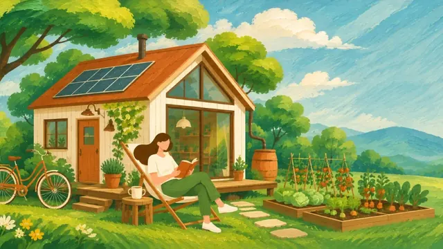
Slow Food, Cittaslow, моттаинаи и sufficiency. Программное эссе о медленной жизни как этической позиции и форме экологического действия.
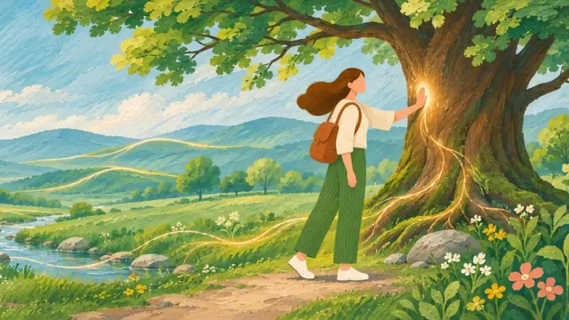
Соластальгия, экотревога, биофилия, экотерапия и активная надежда Джоанны Мэйси. Как психика переживает экологический кризис.
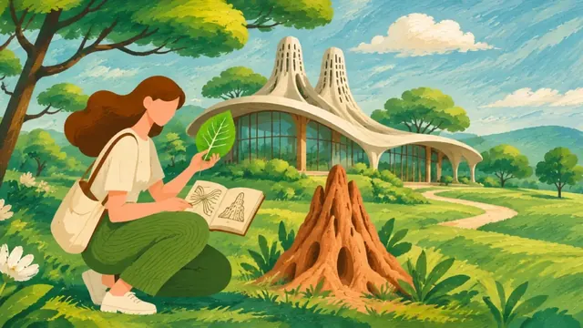
Три уровня подражания по Дженин Бенюс и ревизия канонических примеров: что подтвердилось, что нет и что работает по другой причине.

Пончик Кейт Раворт, планетарные границы и спор о расцеплении. С разбором возражений — включая те, что приходят не от защитников роста.

Почему нельзя отвечать за биосферу, не зная, откуда в кране вода. И почему из вашего водосбора всё равно не видно климата.
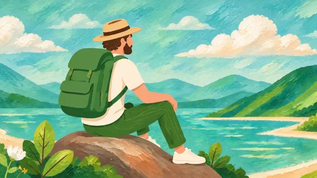
Перевозка и странствие у Тима Ингольда, арифметика авиационных выбросов и то, что происходит с восприятием на десятый день.
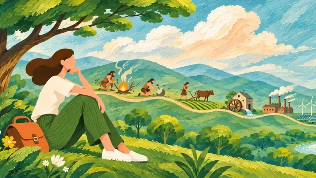
От огня до ИИ. Мамфорд, Хабер-Бош, Великое ускорение, парадокс Джевонса и конвивиальные инструменты Иллича.

Воплощённая энергия, Джейн Джейкобс, Tate Modern и российский контекст. Почему сохранение — экологический выбор.
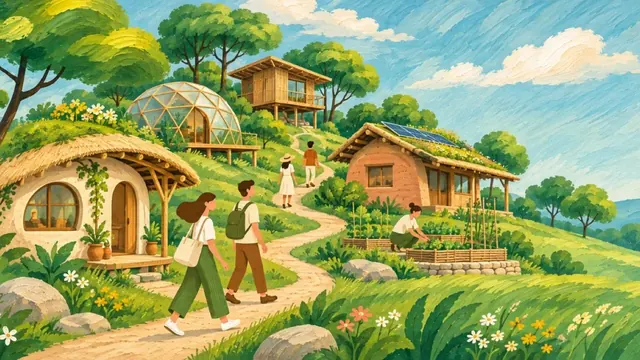
Землянка, earthbag, earthship, A-frame, дом-теплица, модульный дом. Каждый со своей философией и климатической привязкой.
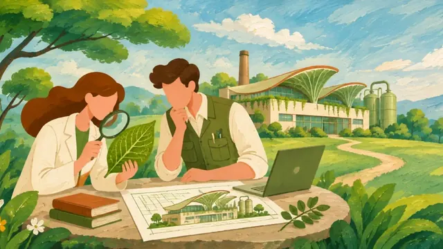
Дженин Бенюс встречает главного инженера нефтегазовой компании. Как биомимикрия входит в отрасль, которая, казалось бы, устроена против неё.

Что произошло бы, если бы Мартин Хайдеггер встретился с застройщиком торгового центра. Разговор о наличном запасе, месте и пространстве.
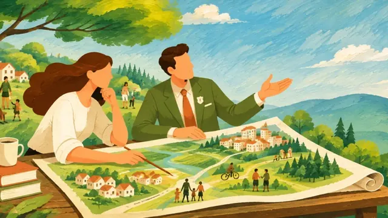
Воображаемый диалог Кейт Раворт с российским замминистром экономики. Где встречаются два экономических языка — и что удаётся перевести.
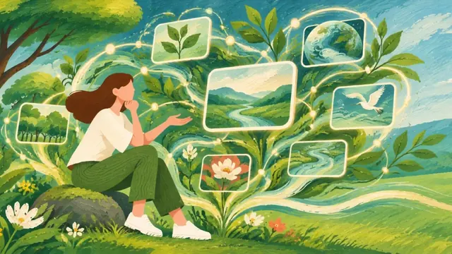
Расширенный разум в эпоху ИИ. Воображаемый диалог и вопрос о том, где находится мысль.
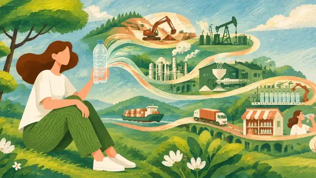
Что происходит, если применить алетейю к самому обыденному объекту XXI века. Мысленный эксперимент.
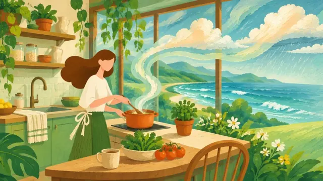
Как Тимоти Мортон помогает увидеть климат через предметы обычной кухни.
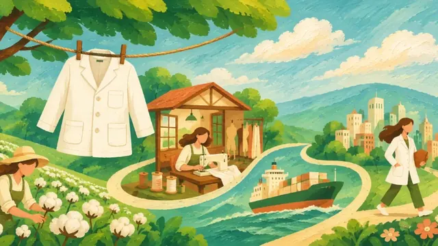
7 стран, 12 этапов прежде чем куртка окажется на вешалке. Трассировка цепочки поставок.
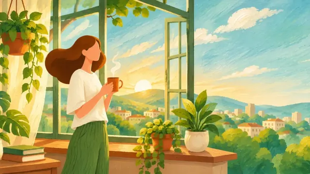
Термин Альбрехта. Имя для переживания, которое было всегда, но не имело слова.
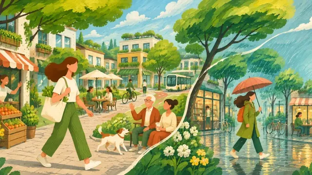
Один день, два города. Хронометраж и встречи с соседями — что меняется в шаговой доступности.
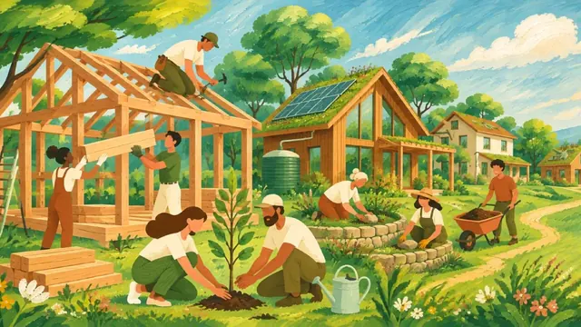
Диана Лиф Кристиан и шесть принципов, отличающих выживших от распавшихся.
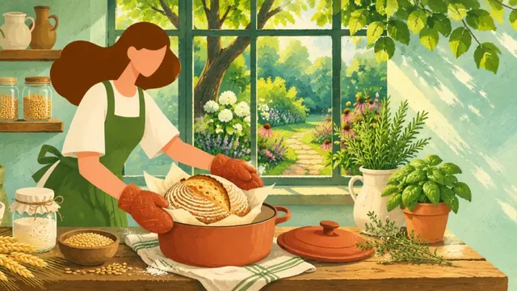
Самый старый продукт, доступный любому. С методикой закваски и базовой буханки.
«Экология — это не тема для обсуждения. Это способ смотреть на реальность, видеть взаимосвязи там, где другие видят разрозненные объекты»